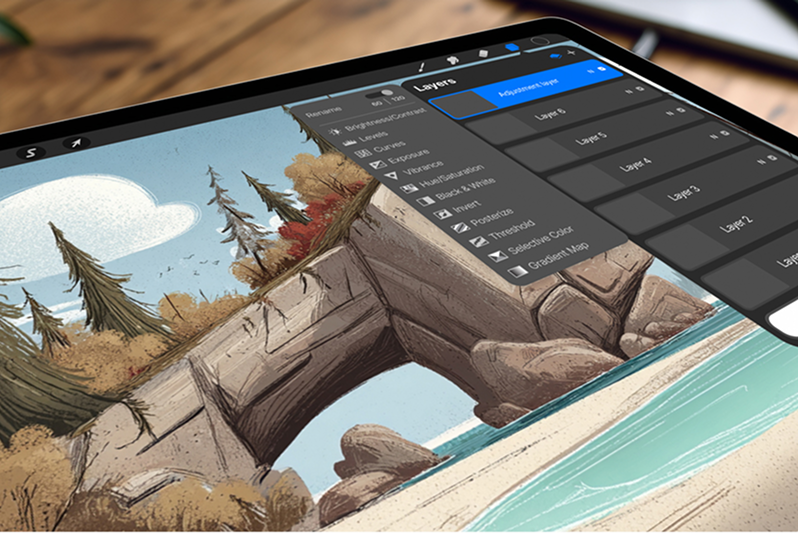

← Back
01

 02
02

 03
03
 04
04

01
A WordPress-to-Shopify migration and full redesign for a growing local coffee brand that had outgrown its digital presence.
Transforming weeknight pizza from a reactive necessity into a reliable family ritual through a curbside-first mobile ordering experience.
A multi-sport fitness event discovery app — a unified, personalized feed and seamless registration for athletes who compete across disciplines.
A deep-dive usability analysis of Procreate examining gesture systems, tool discoverability, and advanced feature access for power users on iPad.
